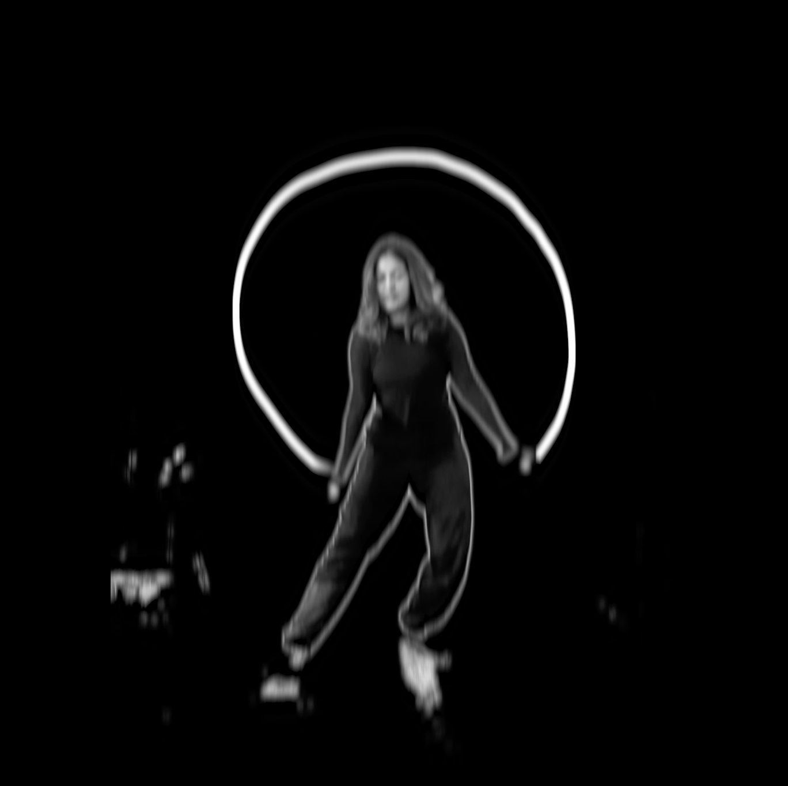
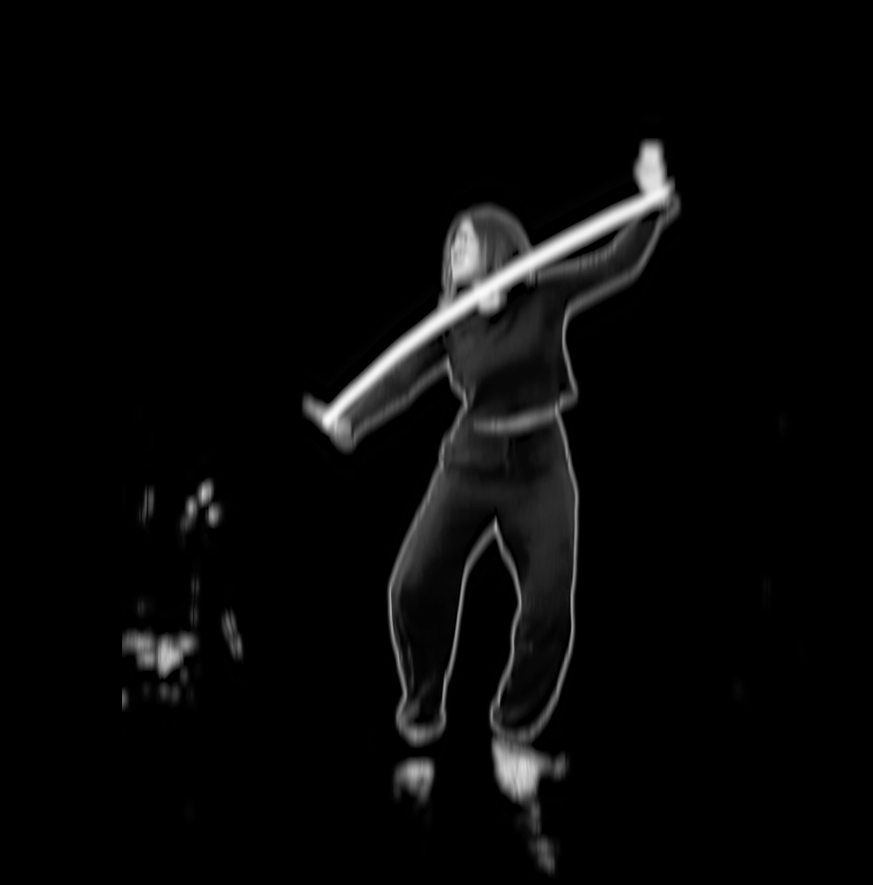

"Paint"
Following the motion of a dancer
A visualization of of the tracking of motion capture
The purpose of this was to take the traditional art form and move it to a space where it interacts with technology. This concept centers around the dancer's motion and the mark they leave on the environment around them.